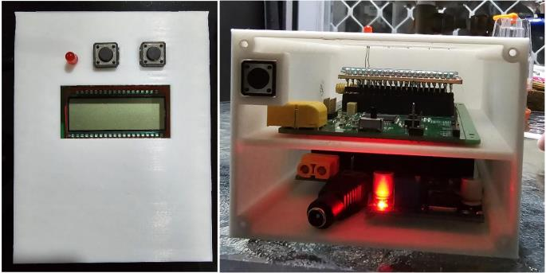
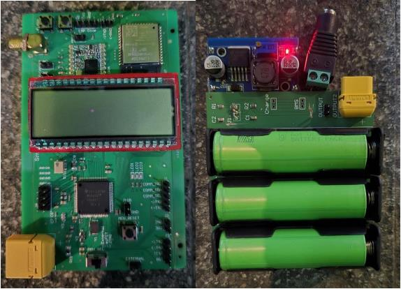

The problem
Indonesian water utilities lose about 35% of their water as non-revenue water, far above the 20% national target. Part of it is non-physical: readings are taken by hand (one meter reader covers about 3,000 addresses a month), re-typed by administrators, and sometimes estimated when a meter cannot be reached.
Our team built a smart water meter that sends accurate readings automatically, at low power and low cost. I was responsible for getting the data from the meter to the utility: the wireless link, the cloud backend and the web interface.


Architecture
Highlighted blocks are my part of the system.
What I built
- Long-range, low-power link. Set up LoRaWAN on the ESP32 and LoRa radio: periodic daily reports plus on-demand readings, within Indonesia's radio regulations for power and duty cycle, with the device sleeping between transmissions.
- Compact data packets. Designed the packet format carrying device identity, consumption and tamper status in a few bytes.
- Serverless cloud backend. Built the ingestion and device-monitoring functions, a scheduled daily check that flags meters that stop reporting, and a relational database for customers, devices and consumption history.
- Web interface. Built a web app showing daily, monthly and cumulative consumption, on-demand readings, tamper alerts and connection status per meter.
- Field and compliance testing. Planned and ran the verification: range tests across Bandung, transmit-power measurement, duty-cycle calculation, multi-device collisions and end-to-end data checks.
Result
- End-to-end system working: meter → LoRaWAN → cloud → web dashboard
- Field range test up to 5 km, with 100% delivery at the 5 km test point
- Transmit power and duty cycle verified within Indonesian regulations
- Cloud correctly detects meters that fail to report
- Results published as a paper on the ITB website, alongside the final-project thesis